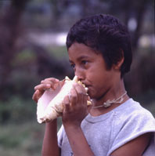
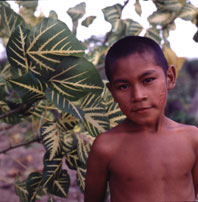

HOME
NUESTRA
MUSICA
Dr.
Emilio
Mendoza
I. Introducción
Música
La música es
la expresión cultural del
hombre a través de sonidos (o con símbolos relacionados
con sonidos). Es un
fenómeno
humano y social que tiene que ver con la percepción
acústica,
fenomenológica, semántica y su relación con el
sistema
cultural de cada humano y su memoria. Con la música se
transmiten
pensamientos, ideas y emociones de un humano a otro u otros. Se
lleva a cabo por medio de la comunicación entre un emisor y un
perceptor
de sonidos. Emisor es la persona que produce los sonidos a
través
de dispositivos que emiten sonidos o instrumentos musicales, y
perceptor
es el que los escucha, interpreta y los entiende. Estos pueden
ser dos
o más personas en un mismo sitio, cientos de personas en un
baile
o concierto, o desde muy lejos, remotamente o de otros tiempos y
culturas,
a través de los medios como la televisión, radio,
casetes,
videos y discos compactos, Internet en mp3, o cualquier otro
soporte de
información
sonora. Escuchar música es percibir orden en sonidos y en el
tiempo. Es un arte temporal, se escucha en el instante del
presente y
desaparece. Por esta razón la memoria, sea la acumulada o la
inmediata, es la vía para el entendimiento de la música y
sus estructuras temporales. Si la música no suena, está
muerta, aunque se preserve en partituras o cintas o discos. Sólo
vive cuando es sonada y escuchada y puede revivir hasta el
infinito, si
se sigue tocando de nuevo.
Sonidos
Los sonidos en
sí son simplemente vibraciones
que
se propagan por ondas a través del aire, u otros medios como los
líquidos y sólidos. Las vibraciones las produce un objeto
que se mueve rápidamente, como puede ser la cuerda de una
guitarra o
las
alas de un mosquito. Estas mueven las partículas del aire que
están
cerca de ellas y así sucesivamente haciendo vibrar el aire, se
propaga
la onda que se llama el sonido. Las vibraciones llegan al oído
del
perceptor donde transfieren el movimiento a la membrana del
tímpano,
a los huesitos del oído interno hasta que llega a producir una
señal
en el cerebro que se entiende como un sonido. Las vibraciones
deben
estar
dentro del rango de 16Hz y 20KHz aproximadamente para poder ser
percibidas
por el humano como sonidos. Esta capacidad puede alterarse por
abuso
auditivo
y edad.
Emisor
Esta es la persona
que hace sonar algún
objeto,
que comúnmente se le llama un instrumento musical. En realidad
puede
ser cualquier cosa que suene, como su voz, un palito contra el
suelo o
una orquesta completa. El emisor organiza los sonidos para que
representen
ideas o expresiones de su mundo interior personal, de su
comunidad o de
la cultura que lo rodea y lo conforman como ser humano. Es
decir, los
sonidos
musicales no son cualquier ruido al azar, sino que están
organizados
de cierta manera como lo quiso la persona que los produce para
transmitir
sus ideas.
Perceptor
El perceptor
escucha
los sonidos a través de
sus
oídos. Su cerebro entonces los interpreta y los comprende. Por
esta
razón, la música es un fenómeno sicológico
además de acústico, ya que depende de la
interpretación
del cerebro para que se entienda como música, o se deseche como
ruido. De aquí el hecho de que no toda la gente piensa igual en
cuanto qué sonidos son música y cuales no lo son. Esto
depende
de la cultura de cada perceptor para que pueda interpretar y
entender
las
ideas y emociones que se estén comunicando a través de la
música. Es fácil rechazar la música de otras
culturas y considerarla mala o fea. La despreciamos porque no
podemos
entenderla,
ya que esas culturas pueden ser muy diferentes a la nuestra. Por
esta
razón,
para poder apreciar y valorar otras músicas es importante
conocer
bien a sus culturas.

Cultura y Tradición
La cultura es la
manera de vivir de un pueblo en un
momento
y lugar determinados. Es la suma total de sus pensamientos y
acciones,
aprendidos
y transmitidos por siglos de cambios y adaptación al mundo
natural
y social. Cambia continuamente, es dinámica y se comparte.
La historia de una
cultura, es decir su tradición,
se mantiene de muchas maneras: Su gente produce documentos y
objetos
de
valor representando lo mejor de la cultura que se cuidan en
museos y
bibliotecas;
se construyen monumentos indestructibles de piedra como las
pirámides
que nos cuentan de civilizaciones de hace miles de años.
Una de las vías
más seguras en todas
las
culturas que sirve para mantenerse en vida, es el cultivo de las
costumbres
y actividades que el pueblo ama y disfruta, lo que se llama
Folklore o
Cultura Popular Tradicional.
La palabra Folklore
es
de procedencia inglesa,
utilizada
por vez primera por el inglés William John Thoms en 1846. Es un
compuesto de las dos palabras “folk” y “lore” que significan
respectivamente
“pueblo” y “saber”. El Folklore incluye una gran cantidad de
expresiones
de un pueblo como lo son la música, danza, indumentaria,
alimentación,
artesanías, literatura oral, juegos y maneras de ser, en fin
toda
su cultura.
Las actividades
que
se realizan dentro de esta
cultura
que nos une a todos como parte de una región, se conocen como
manifestaciones
culturales. La música es un acompañante fijo de estas
manifestaciones
del pueblo venezolano que mantienen viva nuestra tradición
cultural.
A ésta música se le conoce como música
folklórica
o, más recientemente, como Música Popular Tradicional,
que
en este libro estudiamos.
Culturas musicales, juntas pero
no
revueltas
En nuestra cultura
venezolana coexisten muchas otras
tradiciones
musicales, además de la Cultura Popular Tradicional. Estas
pueden
ser de otros tiempos en la historia y de otras culturas del
mundo. Unas
músicas duran apenas semanas en nuestros oídos, como es
el
caso de las modas de artistas nacionales o internacionales que
se
difunden
a través de la radio y la televisión, que son objetos de
consumo.
Existimos dentro de
una
convivencia permanente de
diferentes
culturas, es decir, una convivencia multicultural. Esto sucede
especialmente
en las zonas urbanas, por la multiplicidad de personas de
diferentes
orígenes
que habitan en un mismo lugar.
Así, podemos
también oír la
música
conocida como “clásica” que las orquestas sinfónicas
ejecutan
los fines de semana en los teatros de algunas ciudades. Esta
música
es básicamente una tradición de ciertas culturas europeas
de siglos pasados, como la alemana, que se mantiene viva a
través
de las orquestas que la ejecutan regularmente.
Otras culturas
musicales florecen en ciertos
momentos
y son distribuidos por los canales comerciales y los medios de
comunicación
de masas a otros países. El motivo de esta actividad es
principalmente
el interés comercial. De esta manera “invaden” y toman
completamente
a otras culturas musicales, las cuales pueden extinguirse con
este
atropello
o absorber al invasor y transformarlo. El Reggae de Jamaica se
ha
incorporado
a la vida musical de muchos países, al igual que el Son y la
Rumba
cubanos, el Merengue dominicano, el Rock inglés-norteamericano,
el Calypso de Trinidad, el Jazz, Rap y el Hip-Hop
norteamericanos,
la Samba y el Bossanova brasileros y las Rancheras de México.
En el medio
urbano,
la coexistencia multicultural es
natural
y de ella se desprenden fusiones y creaciones de gran
originalidad.
El Museo de Música
Internacional
La radio, la
televisión y el reproductor de
casetes
o discos compactos han pasado a ser un “gran museo
internacional” que
cubre
e informa sobre toda la historia y geografía musical del mundo
entero.
A través de estos medios podemos escuchar y ver desde que
nacemos
a las culturas musicales del universo, además de las propias y
cercanas
a nuestras comunidades.
La actividad musical
de
la mayoría de las
personas
hoy en día se desarrolla como oyentes de estos aparatos. Los
medios
llegan a casi todos los sitios del país, a todos los venezolanos
quienes oímos diariamente este “museo”.
Si no aprendemos y
cultivamos la música de la
región
donde vivimos, amamos o pertenecemos, corremos el peligro de
borrar la
esencia cultural que nos hace diferentes, y cambiarla por la
presentada
a través de los medios, que no es necesariamente siempre la
nuestra.
Es muy importante
conocer e informarnos del universo
musical,
para así poder valorizar selectivamente a nuestra propia
cultura.
Entender además la esencia que nos identifica como una
región,
nos ayuda a saber que somos distintos, al igual que otras
regiones son
diferentes a nosotros.
Al comprender la
diversidad cultural del globo,
podremos
respetar y convivir en un mundo de mundos disímiles. Conociendo
a fondo la belleza y riqueza de nuestra música, aprendemos a
querernos
más como venezolanos.
Orígenes
Nuestra música
popular tradicional fue creada
y
desarrollada por la comunidad extensa de toda Venezuela a través
de muchos años: Las culturas aborígenes del territorio
americano
fueron invadidas por la cultura española a partir del contacto
con
el viejo mundo en 1492. Un poco más tarde, se agregó a
esta
invasión la cultura africana occidental por medio de la
importación
de grandes cantidades de africanos para servir como esclavos en
el
Nuevo
Mundo.
La Gran Mezcla
La mezcla de estas
tres
diferentes culturas con el
tiempo
creó la integración de sus cantos, bailes e instrumentos
musicales, creencias, ritos, sabiduría y lengua. Así se
fue
generando lo que conocemos hoy en día como nuestra Música
Popular Tradicional, o folklore musical. Cada región de
Venezuela
creció con un tipo de mezcla diferente y por lo tanto
encontramos
regiones que tienen una u otra cultura más acentuada. Las
manifestaciones
culturales de los pueblos de la zona de Barlovento del estado
Miranda
son
fuertemente africanas, cuando la zona de Perijá del estado Zulia
son indígenas. Igualmente, la zona de Paria en el estado Sucre
tiene
más influencia española que las regiones anteriores.
Las características musicales de cada
región
de Venezuela dependen de su mezcla de culturas. Hay que tener en
cuenta
que la música popular tradicional sigue cambiando y es
dinámica:
Siempre existen “invasiones” culturales, grandes o pequeñas, que
entran principalmente por los medios de comunicación masiva y el
desarrollo de estas mezclas nunca se detiene.
Su Valor
Necesitamos
conocer
bien nuestra música
popular
tradicional porque ésta es parte de nuestra historia cultural,
de
lo que hemos sido y de lo que somos. Al conocerla a fondo
podemos
apreciar
su valor, y decidir si resguardarla o cambiarla frente a
cualquier
invasión
de otras culturas extrañas que nos lleguen.
Modos de Comprenderla
El conocimiento de nuestra música popular
tradicional
se puede emprender por diversas vías:
- Podemos acercarnos a la música popular
tradicional
conociendo sus representantes inmediatos que son los
instrumentos
musicales.
A través de ellos logramos un contacto directo porque
aprendemos
sobre la música a través de los mismos sonidos. Vamos a
conocer
los instrumentos y sus conjuntos, a sus ejecutantes y
constructores.
- Podemos conocer la música a
través
de las regiones
culturales donde se escucha y se goza, como por ejemplo la
música
del Joropo Llanero que se toca en la región de los Llanos
abarcando
los estados Apure, Barinas, Cojedes, Guárico y Portuguesa.
- Podemos también comprender la
actividad
musical
como acompañante de las manifestaciones del calendario festivo
del
año, como son los aguinaldos que se cantan en Navidad cada
diciembre.
- Podemos examinarla por medio de la
función
social
que cumple dentro de nuestra cultura como parte del
ciclo de vida
del hombre, como lo es por ejemplo la canción de arrullo
que
ayuda a la madre a dormir al recién nacido.